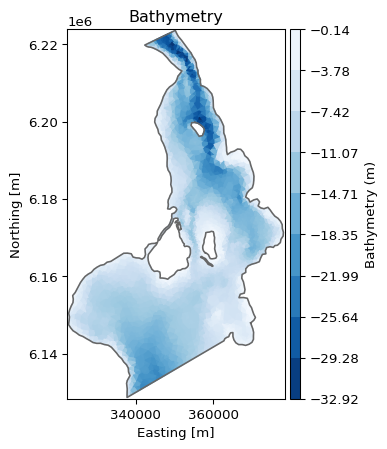
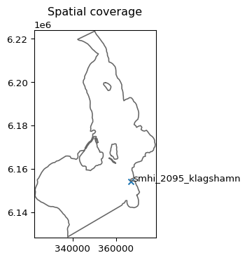
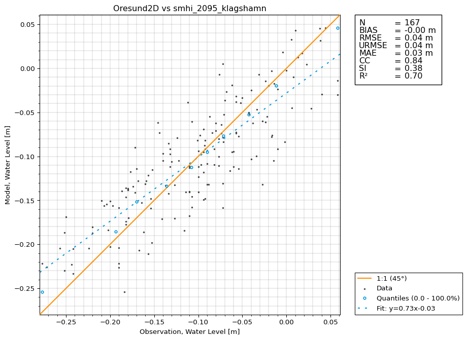

import modelskill as msMIKE21 HD
Water level comparison between MIKE21 HD and observations from the Oresund.
mr = ms.model_result('../data/Oresund2D.dfsu',
item='Surface elevation')
mr<DfsuModelResult>: Oresund2D
Time: 2018-03-04 00:00:00 - 2018-03-10 22:40:00
Quantity: Surface Elevation [m]mr.data.geometry.plot(cmap="Blues_r");
mr.data.geometry.projection'UTM-33'Coordinate reference system used in this model is UTM-33.
o1 = ms.PointObservation('../data/smhi_2095_klagshamn.dfs0', item=0,
x=366844.15, y=6154291.6) # UTM-33
o1<PointObservation>: smhi_2095_klagshamn
Location: 366844.15, 6154291.6
Time: 2015-01-01 01:00:00 - 2020-09-28 00:00:00
Quantity: Water Level [m]Spatial overview
Confirm that the observation is correctly located in the model domain.
ms.plotting.spatial_overview(o1, mr, figsize=(4, 4));
Match the observed data to the model result (interpolate the model result to the observation points).
cmp = ms.match(o1, mr)
cmp<Comparer>
Quantity: Water Level [m]
Observation: smhi_2095_klagshamn, n_points=167
Model(s):
0: Oresund2Dfig = cmp.plot.timeseries(backend="plotly")
fig.show()The reference level is not the same for the model and the observation. We can remove the bias from the model result to make the comparison more fair.
ub_cmp = cmp.remove_bias()
ub_cmp.plot.timeseries(backend="plotly").show();The bias is removed, which affects the rmse, but not the un-biased version urmse.
cmp.skill()| n | bias | rmse | urmse | mae | cc | si | r2 | |
|---|---|---|---|---|---|---|---|---|
| observation | ||||||||
| smhi_2095_klagshamn | 167 | 0.185752 | 0.190176 | 0.04078 | 0.185752 | 0.83973 | 0.377661 | -5.4291 |
ub_cmp.skill()| n | bias | rmse | urmse | mae | cc | si | r2 | |
|---|---|---|---|---|---|---|---|---|
| observation | ||||||||
| smhi_2095_klagshamn | 167 | -2.393295e-17 | 0.04078 | 0.04078 | 0.033354 | 0.83973 | 0.377661 | 0.704384 |
Scatter plot
ms.load_style("MOOD")
ub_cmp.plot.scatter(skill_table=True);